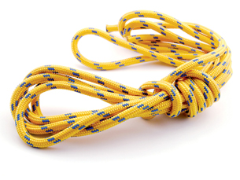
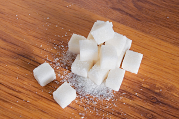

Module 6—Petrochemicals
Going Beyond

© Paulo Resende/shutterstock
Proteins—key components of plants and animals—are another type of natural polymer. Proteins are formed when many amino acids are joined together using an amide functional group between monomers.
proteins: natural polymers of amino acids forming the basic material of living things
amide functional group: a group of atoms composed by connecting a carboxyl group to an amine group
nylon: a synthetic condensation polymer
Nylon is a synthetic polymer that is also created using amide groups between monomers. Nylon was created as a substitute for silk and is very strong. Nylon is used to create ropes, parachutes, and as you well know, many of the clothes you wear.
 Read
Read
Read pages 452–454 in the textbook to learn more about proteins and nylon.
Read

© Smit/shutterstock
Carbohydrates are an important polymer in biological systems. Starch, cellulose, and glycogen are all polymers of sugar molecules joined by a condensation reaction.
Read pages 456–458 in the textbook to learn more about carbohydrates and the synthetic polymer cellulose acetate.
 Self-Check
Self-Check
SC 2. Complete “Practice” questions 18–23 on page 458 in the textbook.
Self-Check Answers
Contact your teacher if your answers vary significantly from the answers provided here.
SC 2.
Practice 18.
There are hydroxyl (-OH) functional groups present in glucose and fructose molecules.
Practice 19.
Cellulose and starch are polysaccharides. The rigid, layered structure of cellulose provides support to plants and plant cells. Because its single chains are small enough to be soluble and mobile, starch serves as a means of storing and transporting energy in plants.
Practice 20.
- Sugars are small molecules and are readily soluble because of strong intermolecular bonding with solvent water molecules. Starch is a polymer of the simple sugar glucose. While starch’s helical shape and single-strand structure allow it to be soluble, it is not as soluble as sugars.
- Cellulose has a different structure than starch. Cellulose is composed of linear polymer chains that can align side by side and favour interchain hydrogen bonding, thus creating a rigid, inflexible structure.
Practice 21.
Carbohydrate molecules can be recognized by their ring structure, which has an oxygen atom in the ring and numerous hydroxyl (-OH) groups attached to the ring.
Practice 22.
Sugar molecules form stronger intermolecular bonds than do hydrocarbons because of their polarity and ability to hydrogen bond. The shape of sugar molecules also allows them to readily fit into a crystal lattice.
Practice 23.
Glucose is highly soluble, starch is slightly soluble, and cellulose is insoluble. Glucose is highly soluble because it is a small, polar, hydrogen-bonded compound that readily forms intermolecular bonds with water molecules. Although starch is a polymer, its single chains are small enough to be water-soluble. Also a polymer, cellulose is insoluble because of its bulky, inflexible structure made of layered sheets.
Self-Check
SC 3. Complete “Section 10.5” questions 1, 2, and 4–14 on page 460 in the textbook.